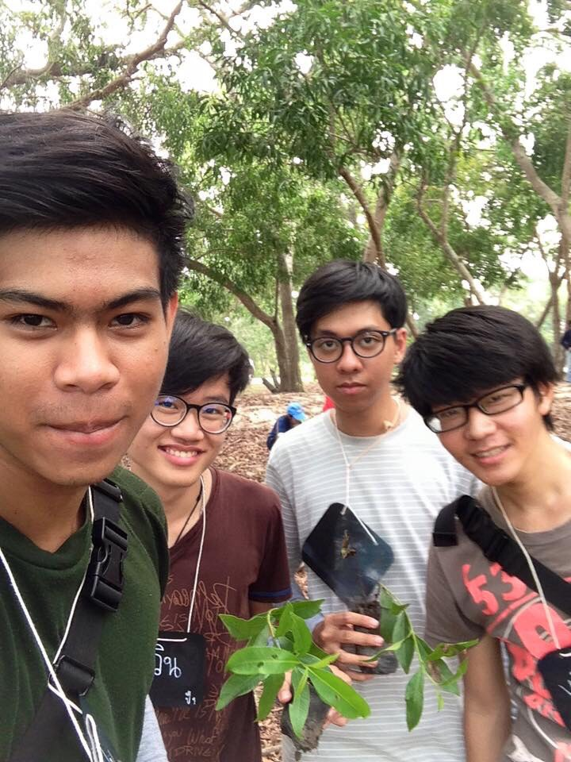
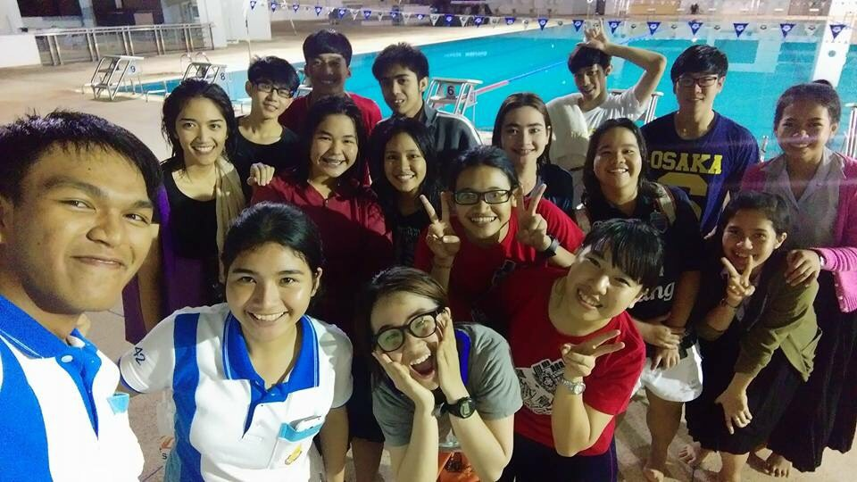
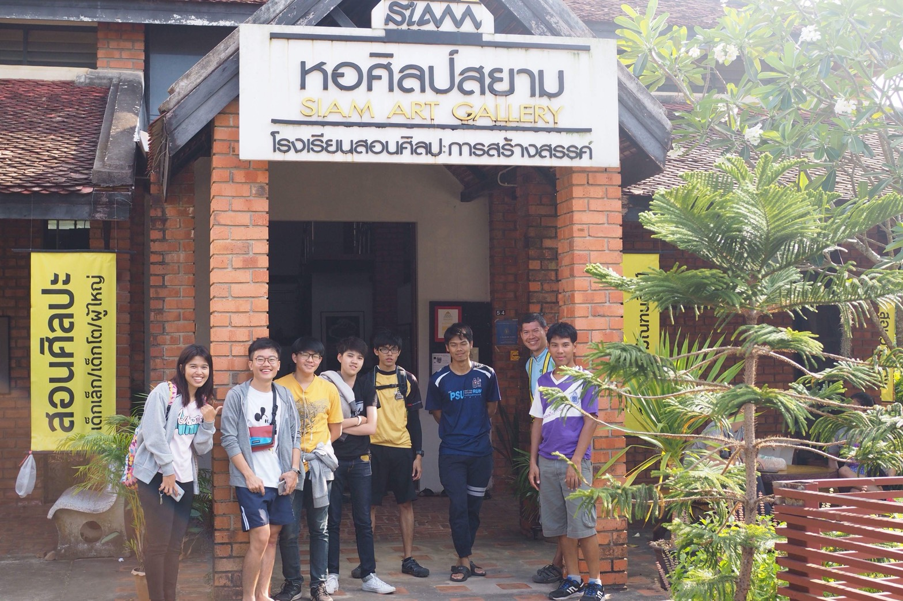
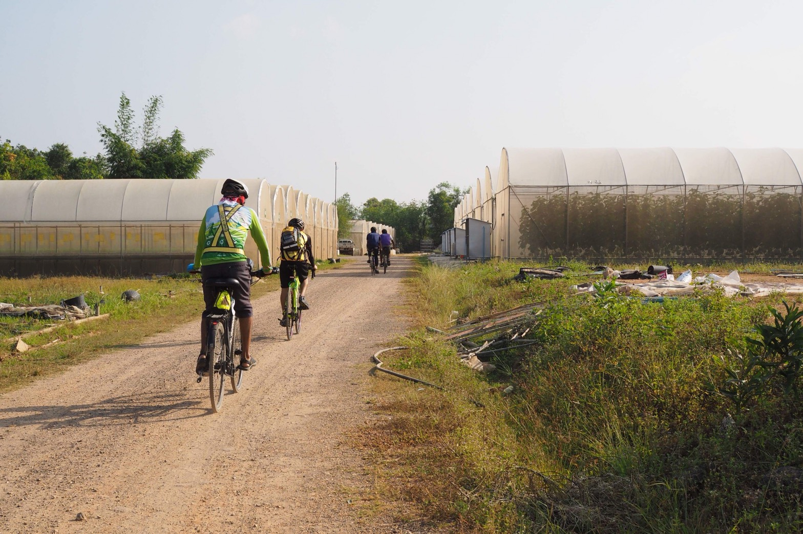

กิจกรรมในรั้วมหาวิทยาลัยส่วนใหญ่เป็นกิจกรรมที่ทำร่วมกับเพื่อนๆทั้งจากในคณะเดียวกันและต่างคณะก็ตามล้วนแต่เป็นสิ่งที่ดีมาก ทุกคนต่างให้ความช่วยเหลือซึ่งกันและกัน มีน้ำใจให้กัน และมีจิตใจที่อยากจะช่วยเหลือครั้งแรกผมกับเพื่อนๆได้ไปค่ายอนุรักษ์ในค่ายมีกิจกรรมมากมายทำให้ผมและเพื่อนๆ ได้ทำร่วมกันและมีกิจกรรมสร้างความสัมพันธ์ระหว่างลูกค่ายทำให้ผมได้รู้จักเพื่อนต่างคณะเป็นครั้งแรก
กิจกรรมในครั้งนี้มีกิจกรรมปลูกป่าชายเลนซึ่งการจะไปยังแหล่งที่ปลูกต้องมีการเดินทางโดยการเดินเท้าซึ่งมีระยะทางที่ไกลมากในระหว่างทางทุกคนต่างช่วยเหลือกันผู้ชายที่มีแรงมากกว่าก็ช่วยผู้หญิงและพี่ค่ายขนของ มีการแบ่งปันน้ำดื่มให้แก่กันเพื่อให้ทุกๆคนไดด้ดื่มอย่างทั่วถึงทำให้ผมรู้สึกประทับใจมากที่เห็นทุกคนมีน้ำใจให้กันระหว่างทางก็มีกิจกรรมมาให้ร่วมกันเล่นระหว่างทาง เช่น เกมไบ้คำเป็นเกมที่คนแรกต้องอ่านคำที่พี่ค่ายให้และจำเพื่อไปบอกต่อกับคนที่สองและสามไปเรื่อยๆจนถึงคนสุดท้ายซึ่งเป็นเกมที่ฝึกความจำโดยคนแรกต้องจำให้ได้และต้องสื่อสารให้คนต่อๆไปรับรู้ในคำๆเดียวกันซึ่งเป็นเกมที่ยากพอสมควรเพราะระหว่างทางของการสื่อสารจะมีสิ่งรบกวนเข้ามาแทรกระหว่างการสื่อสารเช่น เสียงพี่ค่ายการพูดไม่ชัดเจนของคนก่อนหน้า จำคำที่รับมาไม่ได้และไม่สามารถสื่อสารต่อได้ แต่ก็เป็นเกมที่สนุกคนสุดท้ายออกมาเพื่อพูดสิ่งที่ได้รับมาและคำที่พูดจะแตกต่างกับคนแรกอย่างสิ้นเชิงทำให้ทุกคนสนุกและได้หัวเราะด้วยกันและแต่ละด่านพี่ค่ายจะสรุปในสิ่งที่ได้จากเกมและหลังจากเสร็จสิ้นกิจกรรมวันกลับบ้านเราได้มีการแลกเปลี่ยนสมุดกระจกข้างในสมุดมีเพื่อนๆในค่ายมาเขียนความรู้สึกให้กับเราซึ่งเป็นสิ่งที่ดีมากเป็นค่ายที่สนุกที่สุดสำหรับผม
นอกจากนี้ได้มีโอกาสการสร้างความสัมพันธ์กับเพื่อนต่างคณะจากกิจกรรมการแข่งขันกีฬาน้องใหม่ซึ่งผมได้มีโอกาสลงแข่งกีฬาว่ายน้ำซึ่งเป็นกีฬาที่ผมสามารถทำได้ดีที่สุดวันแรกที่ไปพี่ที่ดูแลได้มีการจับเวลาเพื่อดูว่าเราสามารถลงแข่งในรายการอะไรได้บ้าง ซึ่งเวลาที่ออกมามันเป็นเวลาที่นานมากเนื่องจากผมไม่ได้ว่ายน้ำมานานมากแล้วแต่พี่ที่ดูแลก็ให้มาซ้อมทุกวันเพื่อให้ร่างกายสามารถทำความเร็วได้มากที่สุดก่อนถึงวันแข่งในแต่ละวันที่มาซ้อมผมได้รู้จักเพื่อนเพิ่มขึ้นจากต่างคณะและทุกคนมีการให้ความรู้และเทคนิกมีการแบ่งปันความรู้ที่ตนมีให้แก่กัน ทุกคนมีน้ำใจมากทำให้ผมประทับใจ นอกจากนั้นผมรู้สึกว่าร่างกายผมแข็งแรงขึ้นจากการได้ออกกำลังกายทุกวัน มีความคล่องตัวมากขึ้นและเวลาที่จับใหม่ดีขึ้นกว่าเดิมมากและ
ในวันแข่งก็เป็นประสบการณ์แรกของผมมันตื่นเต้นมากแต่ผมพยายามทำให้เต็มที่ที่สุดแต่ผลออกมาผมได้ที่ 4 จาก 5 คนแต่ผมก็ไม่ได้เสียใจเพราะผมได้ทำเต็มที่ที่สุดแล้ว ผมได้อะไรมากกว่าการเป็นที่ 1 สิ่งที่ผมได้คือมิตรภาพที่ทุกคนต่างมีให้แก่กันและน้ำใจที่ให้กันผมว่ามันมีค่ามากกกว่าตำแหน่งที่ 1 มากกว่า
ปฏิสัมพันธ์
ทักษะการทำงาน